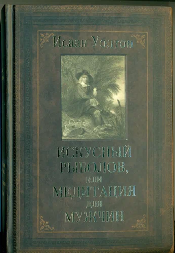

И то, что эти чудеса полезны для созерцания большинством разумных, благочестивых и добропорядочных людей, проверено опытом многих праведных патриархов и пророков древности, в том числе и апостолов Спасителя, ведь для того, чтобы сообщить свою Божественную волю всему миру, Он выбрал, вдохновил и послал с доброй вестью о спасении человечества четырех людей, и все они были рыболовами. Он наделил этих четверых способностью говорить на всех языках и своим блестящим красноречием возбуждать веру в не верующих во Христа евреях, чтобы они добровольно согласились пострадать за Спасителя, распятого их предками, и, освободившись через эти страдания от пут иудейского Закона, обрели новый путь к вечной жизни. Убедить их должны были именно эти блаженные рыболовы. Проницательные люди заметили, что, во-первых, Спаситель никогда не упрекал четырех избранных апостолов за их занятие рыбной ловлей, подобно тому, как Он делал это в отношении писцов и менял. А во-вторых, Он видел, что сердца этих людей по своей природе лучше всего подходят для созерцания и покоя, что это люди с присущим большинству рыболовов мягким, добрым и миролюбивым нравом, и потому именно их избрал наш благословенный Спаситель, любящий сеять благодать в добрых натурах. Выбор Его, несомненно, не был слишком труден, так как те, кого Он отвлек от их занятия и соблаговолил сделать своими учениками, чтобы они следовали за ним и совершали чудеса — я напомню, что речь идет только о четверых из двенадцати апостолов, — были рыболовами. Достойно особого внимания и то, что именно по воле Спасителя эти четверо рыболовов стоят в списке двенадцати апостолов первыми — святой Петр, святой Андрей, святой Иаков, святой Иоанн, и только потом все остальные. И еще более достойно внимания то, что когда Спаситель поднимался на гору для молитвы, Он оставил у подножия горы почти всех своих учеников, и взял с собой, как свидетелей своего будущего Преображения, только троих, и эти трое были рыболовами. Вполне вероятно, что все остальные апостолы, после того, как они решили следовать за Христом, тоже стали рыболовами, ведь точно известно, что многие из них были именно на рыбалке, когда Христос явился им после Его Воскресения, как это записано в XXI главе Евангелия от Иоанна. И раз уж вы обещали слушать меня с терпением, то позволю себе обратиться к наблюдениям, сделанным одним остроумным и сведущим человеком, заметившим, что Бог позволил излагать Его волю в Святом Писании только тем, кого Он сам избрал, и в таких метафорах, к которым Он сам был предрасположен. Он избрал, например, Соломона, который до перемены своих взглядов был в высшей степени влюбчивым человеком, а после избрания его Господом написал духовный диалог между Богом и его Церковью, называемый ныне святой любовной «Песнью Песней», где Соломон пишет: «Очи твои — как озера Хешбона». Если это посчитать достаточным доводом, чему я не вижу препятствий, то можно сказать, что и Моисей, написавший «Книгу Иова», и пророк Амос, бывший пастухом, оба были рыболовами, так как вы найдете в Ветхом Завете не менее двух упоминаний о рыболовных крючках: первый раз их упоминает смиренный Моисей, друг Бога, а второй — смиренный пророк Амос. Относительно этого последнего, то есть пророка Амоса, я выскажу еще одно замечание — тот, кто будет наслаждаться скромным, кротким, ясным слогом этого пророка и сравнит его с высоким, ярким и пышным стилем посланий пророка Исайи, несмотря на то, что оба они равно правдивы, сможет легко понять, что Амос был не только пастухом, но и благородным рыболовом, в чем я полностью Уверился, сравнивая любящие, преданные и смиренные Послания святого Петра, святого Иакова и святого Иоанна, известных нам как рыболовы, с блестящим языком и высокими метафорами святого Павла, который, судя по всему, рыболовом не был.